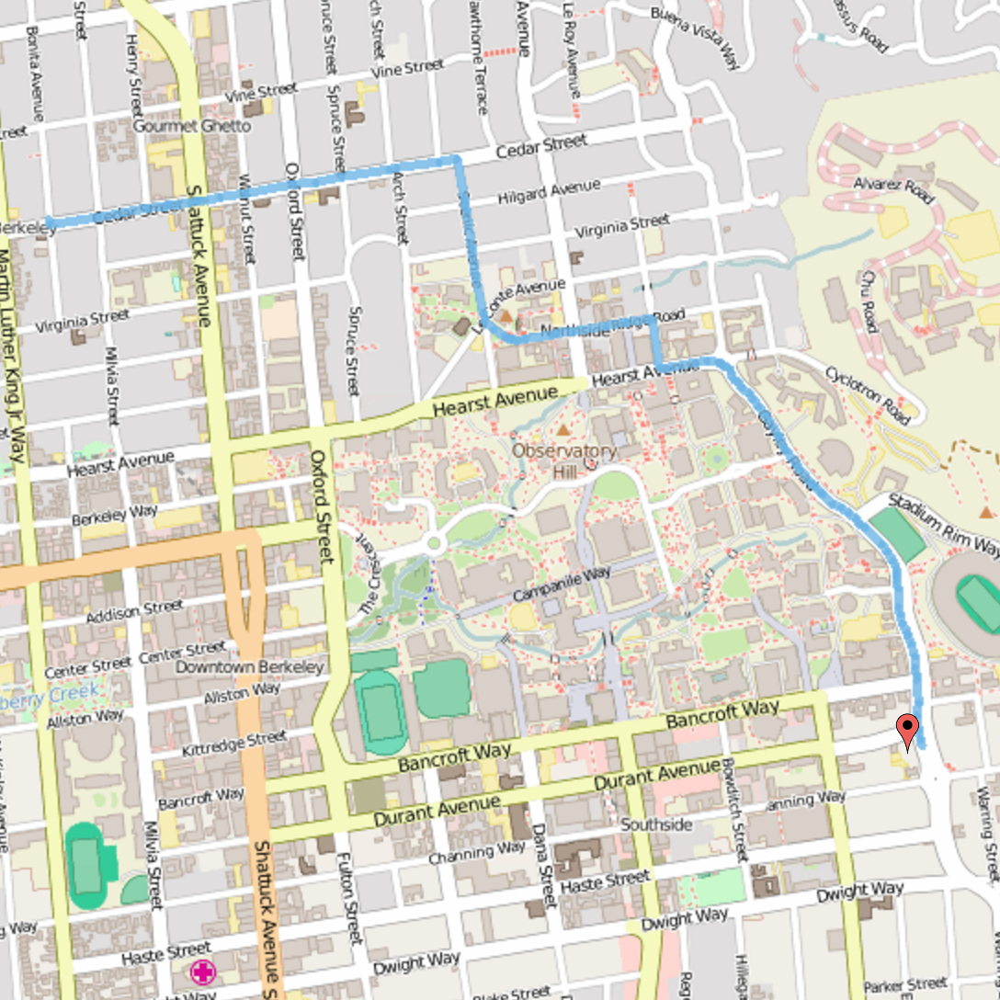
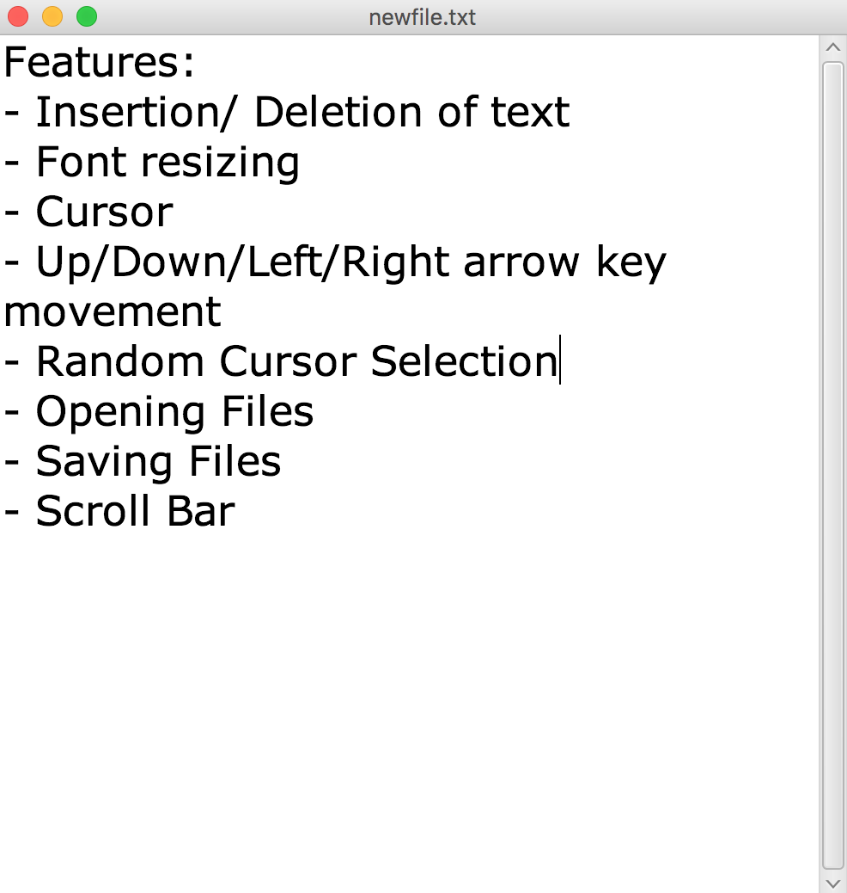

2016

A Google Maps like routing service that uses an underlying quadtree structure to efficiently raster images and implements an A* algorithm to find the shortest path between two points. Utilized OSM data from the Berkeley area.
A facebook chat parsing program that analyzes chat frequency and content of message logs, provides visual graphs of the data, and output word frequency for use in generating word clouds.

A minimalist cross platform text editing platform that implements efficient data structures to allow for constant time insertion, deletion and cursor selection. Implemented using the JavaFX libray.